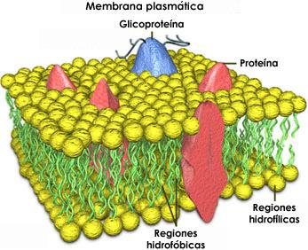

Todas las células que forman a los seres vivos tienen una membrana plasmática que es intermedia entre el interior de la célula y su entorno.
La membrana plasmática participa en todos los procesos de intercambio celular, tanto los que las células efectuan para introducir nutrientes, como aquellos con los cuales se expulsan materiales de desecho.
Químicamente, la membrana de las células está constituída por una mezcla de materiales grasos y de proteínas, que confieren a la estructura flexibilidad y resistencia, respectivamente; además de que interaccionan de manera particular con los ambientes interno y externo.
En las células de las plantas, la membrana plasmática está rodeada por una pared celular, que le brinda rigidez a la célula.
La membrana plasmática constituye la muestra principal de las membranas biológicas, que forman estructuras muy complejas tanto en el interior como hacia el exterior de las células eucariontes.
Las membranas biológicas delimitan a los organelos y sirven como un medio para fijar toda la maquinaria encargada de realizar procesos celulares específicos.